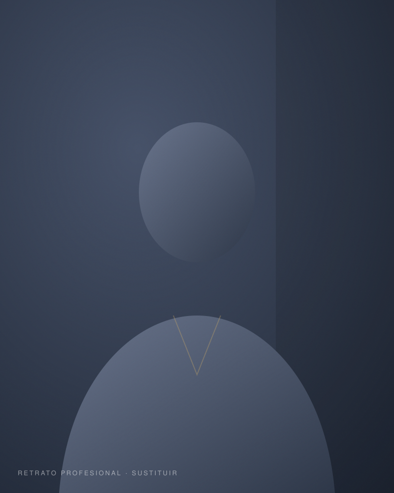

Despido: los 20 días hábiles que no debe dejar pasar
El plazo para impugnar un despido es de caducidad y no admite prórrogas. Le explicamos cómo se cuenta, qué hacer el mismo día de la notificación y qué puede reclamar.

Por [NOMBRE]Abogado/a · [CIUDAD]
Recibir una carta de despido es un golpe, y es comprensible que los primeros días se dediquen a asimilar la noticia. Sin embargo, el reloj empieza a correr desde ese mismo momento: la ley concede un plazo muy breve para reaccionar y, si se pierde, el despido queda firme sin posibilidad de discutirlo.
Un plazo de caducidad
El trabajador dispone de 20 días hábiles desde el día siguiente al despido para impugnarlo. Se trata de un plazo de caducidad, lo que significa que no se interrumpe ni se prorroga por circunstancias personales. Para calcularlo, no se cuentan los sábados, los domingos ni los festivos.
La presentación de la papeleta de conciliación ante el servicio de mediación correspondiente suspende el cómputo, que se reanuda al día siguiente de intentarse la conciliación o de transcurrir el plazo legal sin celebrarse.
Qué hacer el día de la notificación
- Lea la carta con calma y conserve una copia. Las causas y la fecha de efectos son fundamentales.
- Si le piden firmar, puede hacerlo indicando «recibí, no conforme» junto a la fecha.
- No firme el finiquito como conforme sin haberlo revisado antes con un profesional.
- Reúna su contrato, las últimas nóminas y su informe de vida laboral.
Las tres calificaciones posibles
Un despido puede declararse procedente, si la empresa acredita la causa alegada; improcedente, si no la acredita o no se respetan los requisitos de forma; o nulo, si vulnera derechos fundamentales o afecta a situaciones especialmente protegidas, como el embarazo.
En caso de improcedencia, la empresa puede optar entre readmitir al trabajador o abonarle una indemnización de 33 días de salario por año trabajado (con reglas transitorias para los contratos anteriores a febrero de 2012), con un máximo de 24 mensualidades. La nulidad, en cambio, obliga a la readmisión inmediata con abono de los salarios dejados de percibir.
En materia de despido, consultar en la primera semana no es una precaución excesiva: es la forma de conservar todas sus opciones.
Conclusión
Cada despido tiene matices que pueden cambiar por completo el resultado. Si ha recibido una carta de despido, o sospecha que va a recibirla, le recomiendo que consulte cuanto antes para revisar la documentación y decidir la mejor estrategia dentro de plazo.
Este artículo ofrece información de carácter general y no constituye asesoramiento jurídico. Para valorar su caso concreto, le recomiendo solicitar una consulta.